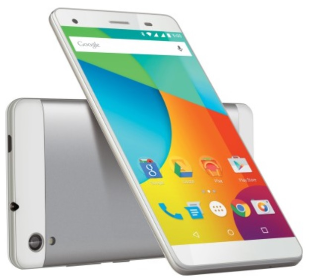

Interactive Web Learning
Toggle navigation
Getting Started
The Interactive web learning for Android Apps
Android is the beautiful, free and open source mobile SDK for developing native and progressive apps with ease.
Get started
Start Building App
View docs
